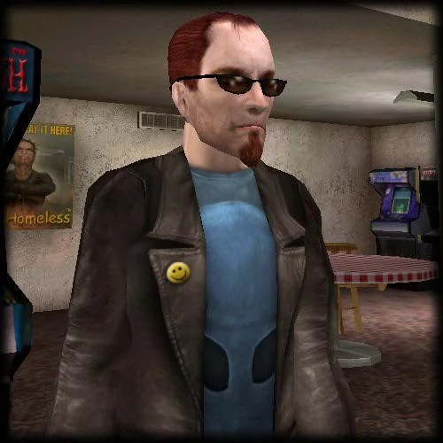

O Postal Dude é o protagonista da série Postal, famosa por sua liberdade absurda, humor negro e crítica social sem filtro. Ele é o símbolo máximo do caos em forma humana — sarcástico, insano e com um mijo tão poderoso quanto seu arsenal de armas. Ele não é um herói, não é um vilão... ele é só um cara tentando viver a vida. Do jeito dele.
História
- Postal 1A origem. Postal Dude entra em surto após acreditar que o governo está envenenando o ar. O jogo é em perspectiva isométrica e mais sério, quase sem humor. Mas já mostra o lado perturbado do personagem.
- Postal 2O ápice. Postal Dude passa a semana em Paradise, fazendo tarefas "normais" como comprar leite ou conseguir um autógrafo. O problema? Tudo pode escalar para um massacre. O humor negro, a sátira e a liberdade total deram fama ao jogo.
- Postal 2: Apocalypse WeekendExpansão direta da história, agora com zumbis, animais infectados, e mais violência ainda. Menos liberdade, mais linearidade.
- Postal 2: Lost ParadiseUm dos mods mais famosos. Reimagina o jogo com novas áreas, novos personagens, objetivos e MUITA treta. Fãs consideram quase uma continuação alternativa.
- Postal ReduxRemake do primeiro jogo com gráficos renovados e trilha sonora nova. Manteve o estilo original, mas com melhorias modernas. Uma forma de apresentar o caos clássico para uma nova geração.
- Postal: Brain DamagedO famigerado fracasso. Desenvolvido por outro estúdio, foi mal recebido por bugs, limitações e por ignorar o espírito da série. A própria Running With Scissors descanonizou o jogo.
- Psotal 3A redenção. Postal Dude chega a Edensin após perder tudo e tenta reconstruir a vida. Totalmente inspirado no Postal 2, com novo visual, voz clássica de volta e liberdade total.
- Postal 4: No RegretsUm spin-off estilo boomer shooter, com vibe à la Doom. Postal Dude acorda num hospital psiquiátrico e entra numa viagem maluca por sua própria mente. Humor surreal, gameplay rápido e insano — altamente elogiado.
Habilidades
- Mijo de poder:Pode mijar em inimigos, apagar fogo, envenenar pessoas (se estiver doente) ou até usar como distração. Literalmente uma arma.
- Regeneração alternativa:Se cura usando crack, donuts, pizza do lixo e outros "itens de saúde". Nada saudável, mas funciona.
- Arsenal criativo:De armas comuns (pistolas, escopetas) até gasolina, fósforos, lança-cabeças, gato silenciador, pá, e até cabeça de vaca podre.
- Resistência absurda:Aguenta tiroteios, explosões e ainda faz piada no meio do caos.
- Resistência absurda:Transforma qualquer item em arma. Criatividade + violência = Postal Dude.
Caracteristicas
- Aparência:Sobretudo preto, óculos escuros, cavanhaque, camiseta sarcástica — visual marcante.
- Personalidade:Sarcástico, niilista, frequentemente desiludido com a vida e com a sociedade.
- Fala icônica:Frases memoráveis e cheias de ironia, dubladas por Rick Hunter (nos jogos mais famosos).
- Comportamento imprevisível:Pode ser um cidadão normal... ou um maníaco homicida, dependendo do jogador.
Curiosidades
- O nome “Postal” vem do termo "going postal", inspirado em surtos violentos nos correios dos EUA.
- Postal 2 foi banido em mais de 10 países, incluindo Austrália e Alemanha.
- O jogo é 100% jogável de forma pacífica — se o jogador quiser. Mas... quem quer?
- A Running With Scissors zoa tudo, até eles mesmos. O jogo é cheio de metalinguagem, humor sujo e piadas de gosto duvidoso — intencionalmente.
- Há um filme de Postal (2007), dirigido por Uwe Boll e estrelado por Zack Ward como Postal Dude. O filme é tão doido quanto os jogos.